Modelo de Crédito Parcial
Estimación de umbrales del PCM
Los parámetros del PCM para el constructo Discusión muestran una estructura ordinal adecuada de las categorías de respuesta. Como corresponde al modelo PCM, el parámetro de discriminación se mantiene fijo en a = 1 para todos los ítems, por lo que la interpretación se centra en la localización de los umbrales. En todos los reactivos, los umbrales se ordenan progresivamente (b1 < b2 < b3 < b4), lo que indica que las categorías aumentan conforme se incrementa el nivel del rasgo latente. Los primeros umbrales (b1) se ubican en niveles bajos del continuo, aproximadamente entre θ = -2.52 y θ = -1.68, lo que sugiere que pasar de la categoría inicial a una categoría superior ocurre en niveles relativamente bajos de habilidad. En cambio, los umbrales superiores (b3 y b4) se localizan en niveles altos, especialmente b4, con valores entre θ = 6.58 y θ = 6.97, lo que indica que las categorías más altas requieren niveles muy elevados del constructo Discusión. En conjunto, el PCM sugiere un funcionamiento ordinal coherente de los ítems, aunque las categorías superiores parecen ser exigentes y probablemente menos frecuentes en la muestra.
| a | b1 | b2 | b3 | b4 | Item |
|---|---|---|---|---|---|
| 1 | -2.086 | 2.396 | 4.900 | 6.783 | Item60 |
| 1 | -2.519 | 1.808 | 4.844 | 6.826 | Item61 |
| 1 | -1.961 | 2.411 | 5.055 | 6.924 | Item62 |
| 1 | -1.676 | 2.527 | 5.124 | 6.887 | Item63 |
| 1 | -2.039 | 2.066 | 4.987 | 6.967 | Item64 |
| 1 | -2.038 | 2.064 | 4.599 | 6.576 | Item65 |
Las CCI del PCM para el constructo Discusión muestran un funcionamiento ordinal progresivo de las categorías de respuesta. En general, la categoría P1 predomina en niveles bajos de θ, la categoría P2 alcanza su mayor probabilidad en niveles cercanos al centro del continuo, la categoría P3 se ubica en niveles medio-altos y las categorías P4 y P5 aumentan principalmente en niveles altos del rasgo latente. Este patrón indica que las categorías se activan de manera ordenada conforme aumenta la habilidad estimada en Discusión. Sin embargo, se observa que las categorías superiores, especialmente P4 y P5, se localizan en zonas muy altas de θ, lo que sugiere que representan niveles exigentes del constructo y probablemente fueron seleccionadas por una proporción menor de participantes. En conjunto, las curvas respaldan el funcionamiento ordinal de los ítems, aunque también muestran que el PCM concentra mayor información en niveles bajos, medios y medio-altos, mientras que las categorías más altas parecen requerir niveles elevados de habilidad latente.
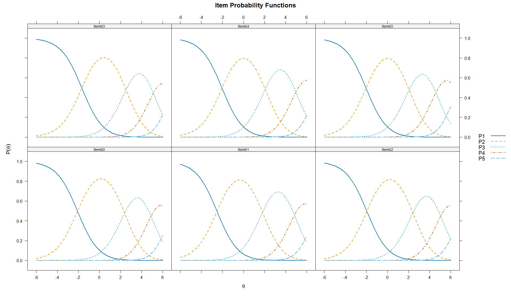
Retrotraducción factorial del PCM
La retrotraducción factorial del PCM para el constructo Discusión mostró comunalidades muy elevadas y homogéneas en todos los ítems (h² = .952). Esto indica que, bajo este modelo, una proporción muy alta de la varianza de cada reactivo es explicada por el factor latente. Sin embargo, este resultado debe interpretarse con cautela, ya que en el PCM el parámetro de discriminación se fija en a = 1 para todos los ítems, lo que puede producir una estructura de cargas o comunalidades altamente homogénea. Por tanto, aunque estos valores respaldan una fuerte relación de los reactivos con el constructo Discusión, conviene complementar esta evidencia con modelos más flexibles, como el GPCM o el GRM, donde las discriminaciones pueden variar entre ítems.
Modelo de Crédito Parcial Generalizado
Estimación de parámetros del GPCM
Los parámetros del GPCM para el constructo Discusión muestran discriminaciones diferenciadas y elevadas en todos los ítems (a = 3.166–4.378), lo que indica una alta capacidad de los reactivos para distinguir entre participantes con distintos niveles del rasgo latente. Los ítems con mayor discriminación fueron Item64 (a = 4.378), Item63 (a = 4.321), Item61 (a = 4.317) e Item62 (a = 4.223), seguidos por Item60 (a = 3.656) e Item65 (a = 3.166), que también presentan valores adecuados y altos. Los umbrales se ordenan progresivamente en todos los reactivos, lo que respalda el funcionamiento ordinal de las categorías de respuesta. En general, los primeros umbrales se ubican en niveles bajos del continuo, mientras que los umbrales superiores se desplazan hacia niveles medio-altos y altos de θ, lo que indica que las categorías más altas requieren mayor nivel de habilidad latente en Discusión. En conjunto, el GPCM sugiere un funcionamiento sólido de los ítems, con alta discriminación y categorías ordenadas a lo largo del rasgo latente.
| a | b1 | b2 | b3 | b4 | Item |
|---|---|---|---|---|---|
| 3.656 | -0.606 | 0.778 | 1.628 | 2.558 | Item60 |
| 4.317 | -0.731 | 0.580 | 1.566 | 2.520 | Item61 |
| 4.223 | -0.555 | 0.765 | 1.656 | 2.604 | Item62 |
| 4.321 | -0.466 | 0.799 | 1.677 | 2.595 | Item63 |
| 4.378 | -0.579 | 0.659 | 1.618 | 2.599 | Item64 |
| 3.166 | -0.605 | 0.697 | 1.545 | 2.470 | Item65 |
Las CCI del GPCM para el constructo Discusión muestran un funcionamiento ordinal adecuado y más definido que el observado en el PCM. En todos los ítems, la categoría P1 predomina en niveles bajos de θ, las categorías intermedias (P2, P3 y P4) se activan de manera progresiva en zonas bajas-medias, medias y medio-altas, y la categoría P5 aumenta claramente en los niveles más altos del rasgo latente. Las curvas son estrechas y pronunciadas, especialmente en los ítems 61, 62, 63 y 64, lo que coincide con sus elevados valores de discriminación y sugiere una alta capacidad para distinguir entre participantes con niveles cercanos de habilidad en Discusión. El Item65 presenta una discriminación relativamente menor, aunque conserva un patrón ordinal claro. En conjunto, las curvas respaldan el funcionamiento progresivo de las categorías y sugieren que el GPCM representa adecuadamente la estructura de respuesta de los ítems del constructo Discusión.
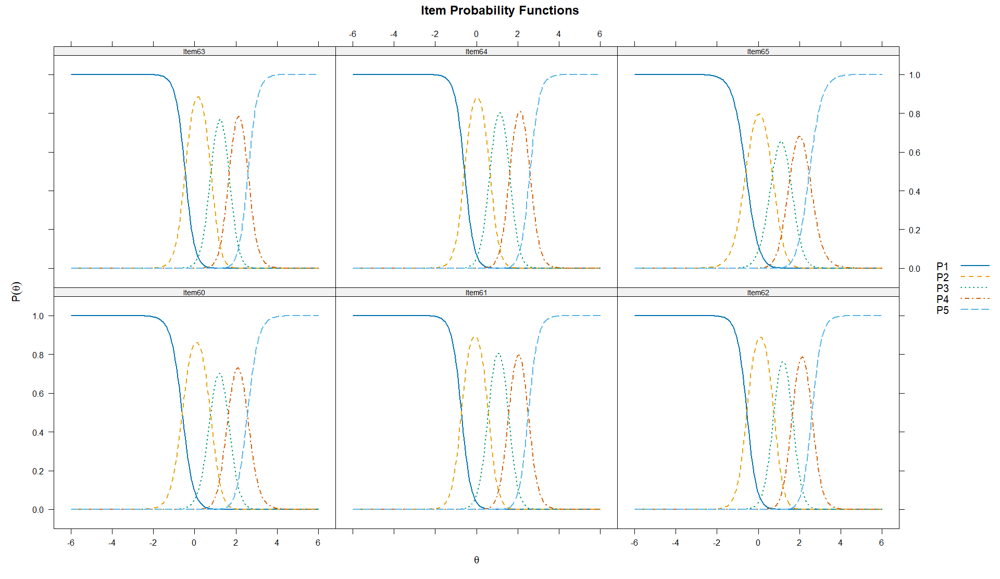
Retrotraducción factorial del Modelo GPCM
La retrotraducción factorial del GPCM evidenció una relación extremadamente fuerte entre los reactivos y el constructo latente Discusión. Las cargas factoriales oscilaron entre .979 y .989, mientras que las comunalidades variaron entre .959 y .978, indicando que más del 95% de la varianza de cada ítem es explicada por el factor común. Los ítems con mayor asociación al constructo fueron Item61, Item63 y Item64 (λ = .989; h² = .978), seguidos muy de cerca por Item62 (λ = .988; h² = .977) e Item60 (λ = .984; h² = .969). Aunque Item65 presentó los valores más bajos del conjunto, sus indicadores permanecieron en niveles muy elevados (λ = .979; h² = .959). Adicionalmente, la suma de cargas factoriales fue de 5.839, y la proporción de varianza explicada alcanzó 97.3%, lo que proporciona evidencia muy sólida de unidimensionalidad desde la perspectiva del GPCM. En conjunto, estos resultados sugieren que los seis reactivos conforman un conjunto altamente homogéneo y coherente para la medición del constructo Discusión, con una representación muy consistente del rasgo latente subyacente.
| Item | F1 | h2 |
|---|---|---|
| Item60 | 0.984 | 0.969 |
| Item61 | 0.989 | 0.978 |
| Item62 | 0.988 | 0.977 |
| Item63 | 0.989 | 0.978 |
| Item64 | 0.989 | 0.978 |
| Item65 | 0.979 | 0.959 |
Modelo de Respuesta Graduada
Estimación de parámetros del GRM
Los parámetros del GRM para el constructo Discusión muestran discriminaciones muy elevadas en todos los ítems (a = 3.639–4.670), lo que indica una alta capacidad de los reactivos para diferenciar entre participantes con distintos niveles del rasgo latente. Los ítems con mayor discriminación fueron Item62 (a = 4.670), Item61 (a = 4.630), Item63 (a = 4.602) e Item64 (a = 4.580), seguidos por Item60 (a = 4.101) e Item65 (a = 3.639), que también presentan valores altos. Los umbrales se ordenaron progresivamente en todos los reactivos (b1 < b2 < b3 < b4), lo que respalda el funcionamiento ordinal de las categorías de respuesta. En general, los primeros umbrales se ubican en niveles bajos del continuo, mientras que los umbrales superiores se desplazan hacia niveles medio-altos y altos de θ. Esto indica que las categorías más altas requieren mayor nivel de habilidad latente en Discusión. En conjunto, el GRM evidencia un funcionamiento muy sólido de los ítems, con alta discriminación y categorías bien organizadas a lo largo del rasgo latente.
| a | b1 | b2 | b3 | b4 | Item |
|---|---|---|---|---|---|
| 4.101 | -0.604 | 0.741 | 1.667 | 2.662 | Item60 |
| 4.630 | -0.726 | 0.559 | 1.597 | 2.616 | Item61 |
| 4.670 | -0.553 | 0.740 | 1.668 | 2.695 | Item62 |
| 4.602 | -0.467 | 0.786 | 1.717 | 2.701 | Item63 |
| 4.580 | -0.583 | 0.651 | 1.653 | 2.669 | Item64 |
| 3.639 | -0.610 | 0.670 | 1.602 | 2.552 | Item65 |
Las CCI del GRM para el constructo Discusión muestran un funcionamiento ordinal claro y altamente definido de las categorías de respuesta. En todos los ítems, la categoría P1 predomina en niveles bajos de θ, mientras que las categorías P2, P3 y P4 se activan de manera secuencial conforme aumenta el rasgo latente. Finalmente, la categoría P5 alcanza mayor probabilidad en niveles altos de θ. Las curvas son pronunciadas y bien separadas, especialmente en los ítems 61, 62, 63 y 64, lo que coincide con sus valores elevados de discriminación y sugiere una fuerte capacidad para distinguir participantes con niveles cercanos de habilidad en Discusión. El Item65 presenta curvas ligeramente menos estrechas, coherente con su menor discriminación relativa, aunque conserva un patrón ordenado y funcional. En conjunto, las CCI respaldan un funcionamiento sólido del constructo Discusión bajo el GRM, con categorías progresivas, alta discriminación y adecuada representación del continuo latente.
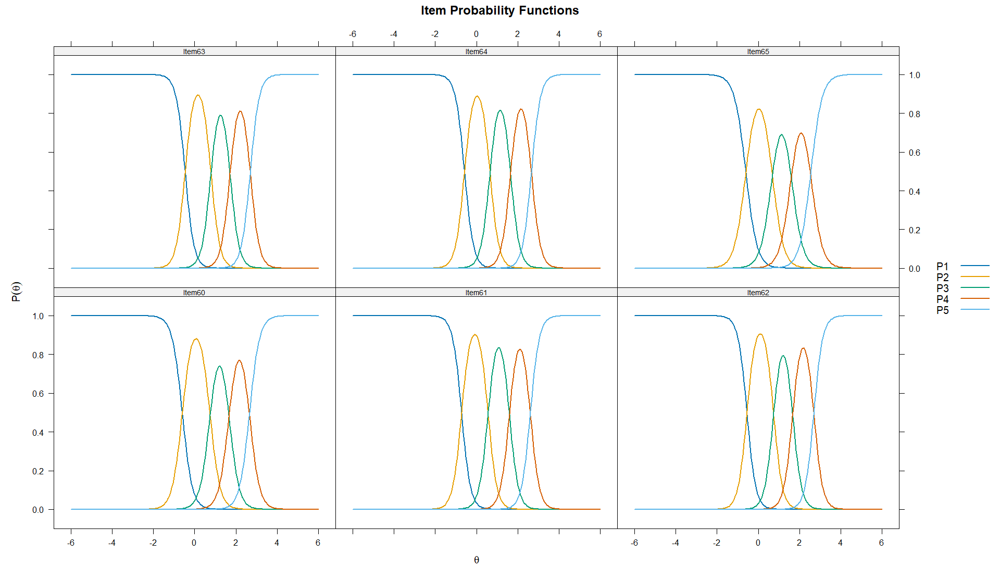
Retrotraducción factorial del GRM
La retrotraducción factorial del GRM para el constructo Discusión mostró cargas factoriales elevadas en todos los ítems (λ = .906–.940), así como comunalidades altas (h² = .820–.883). Esto indica que los reactivos se asocian fuertemente con el factor latente y que una proporción importante de su varianza es explicada por el constructo. Los ítems con mayores cargas fueron Item62 (λ = .940; h² = .883), Item61 (λ = .939; h² = .881), Item63 (λ = .938; h² = .880) e Item64 (λ = .937; h² = .879), lo que confirma su fuerte representación del rasgo latente. El Item65 presentó la carga más baja del conjunto (λ = .906; h² = .820), aunque todavía se mantiene en un nivel alto y adecuado. Además, la proporción de varianza explicada por el factor fue elevada (86.6%), lo que respalda una estructura predominantemente unidimensional para el constructo Discusión bajo el GRM.
| Item | F1 | h2 |
|---|---|---|
| Item60 | 0.924 | 0.853 |
| Item61 | 0.939 | 0.881 |
| Item62 | 0.940 | 0.883 |
| Item63 | 0.938 | 0.880 |
| Item64 | 0.937 | 0.879 |
| Item65 | 0.906 | 0.820 |
Unidimensionalidad del constructo mediante AFC
La unidimensionalidad del constructo Discusión se evaluó inicialmente mediante AFC ordinal con estimador DWLS. En primer lugar, el SRMR = .020 mostró un valor muy bajo, claramente inferior al punto de referencia convencional de .08, lo que indica una discrepancia residual mínima entre la matriz observada y la matriz reproducida por el modelo. Desde esta perspectiva, el resultado aporta evidencia fuerte de unidimensionalidad esencial. Además, los índices incrementales fueron adecuados y elevados, tanto en su versión escalada (CFI = .996; TLI = .994) como en la versión robusta (CFI = .970; TLI = .951), lo que respalda el ajuste comparativo del modelo unifactorial. Las cargas factoriales estandarizadas también fueron muy altas en todos los ítems (λ = .895–.932), indicando que los reactivos se asocian fuertemente con el factor latente Discusión. Aunque el RMSEA fue elevado en su versión escalada y robusta, este índice puede ser más sensible en modelos con pocos grados de libertad. En conjunto, considerando principalmente el SRMR, los índices incrementales y las cargas factoriales, los resultados respaldan una estructura predominantemente unidimensional para el constructo Discusión.
Los índices de ajuste TRI para el constructo Discusión mostraron un mejor desempeño de los modelos flexibles en comparación con el PCM. El PCM presentó el peor ajuste residual, con SRMSR = .126 y un RMSEA elevado (.131), lo que sugiere que restringir la discriminación de todos los ítems a un mismo valor no representa de manera óptima los datos. En contraste, el GPCM y el GRM presentaron un ajuste residual adecuado (SRMSR = .022 en ambos casos), así como índices incrementales elevados (CFI = .991 y .990; TLI = .985 y .984, respectivamente). El GPCM mostró valores ligeramente mejores en M2, RMSEA, CFI y TLI; sin embargo, el GRM presentó los mejores criterios de información, con menores valores de AIC, SABIC y BIC, además del mayor LogLik. La comparación entre PCM y GPCM fue significativa (X² = 175.618, gl = 5, p < .001), lo que respalda la mejora al permitir discriminaciones diferenciadas. En conjunto, aunque el GPCM muestra un ajuste global ligeramente superior, los criterios comparativos favorecen al GRM como el modelo con mejor ajuste relativo para el constructo Discusión.
| Modelo | M2 | gl | p | RMSEA | IC 95% RMSEA | SRMSR | TLI | CFI | AIC | SABIC | BIC | LogLik |
|---|---|---|---|---|---|---|---|---|---|---|---|---|
| PCM | 186.422 | 14 | .000 | .131 | [.114, .148] | .126 | .970 | .972 | 7095.002 | 7130.170 | 7209.552 | -3522.501 |
| GPCM | 66.188 | 9 | .000 | .094 | [.073, .116] | .022 | .985 | .991 | 6929.384 | 6971.586 | 7066.844 | -3434.692 |
| GRM | 68.980 | 9 | .000 | .096 | [.076, .118] | .022 | .984 | .990 | 6841.408 | 6883.610 | 6978.869 | -3390.704 |
Independencia local del modelo GRM
La independencia local del modelo GRM para el constructo Discusión se evaluó mediante el índice LD de Chen y Thissen y el estadístico Q3 de Yen. En el análisis LD, varios pares de ítems presentaron valores elevados; sin embargo, la interpretación se centró en las correlaciones residuales estandarizadas reportadas por mirt, entendidas como coeficientes V de Cramer con signo. Tomando como referencia el criterio de Cohen, las asociaciones menores a .30 en valor absoluto se consideran pequeñas. Bajo este criterio, algunos pares superaron dicho umbral, especialmente Item62–Item65 (r = -.743), Item60–Item65 (r = -.643), Item61–Item65 (r = -.485), Item64–Item65 (r = .386), Item63–Item64 (r = .375) e Item60–Item63 (r = -.301). Esto sugiere la presencia de dependencia residual específica entre algunos reactivos, particularmente alrededor del Item65.
Por su parte, el análisis Q3 mostró asociaciones residuales de magnitud baja a moderada, con valores entre -.320 y -.010. Los pares con mayor magnitud fueron Item61–Item64 (Q3 = -.320), Item60–Item63 (Q3 = -.308), Item62–Item63 (Q3 = -.292), Item60–Item65 (Q3 = -.280), Item60–Item64 (Q3 = -.267) e Item62–Item64 (Q3 = -.233). Varios de estos valores superan el punto de referencia aproximado de |Q3| > .2236, por lo que sugieren asociaciones residuales puntuales. En conjunto, los resultados indican que la independencia local no se cumple plenamente en todos los pares; sin embargo, la dependencia parece concentrarse en relaciones específicas entre ítems, más que representar un problema generalizado del constructo Discusión. Estos hallazgos pueden interpretarse como posibles señales de redundancia conceptual o de subcomponentes internos relacionados con formas específicas de elaborar la discusión de resultados.
Ajuste al ítem del modelo GRM
El ajuste al ítem del modelo GRM para el constructo Discusión fue, en general, aceptable. Los valores de infit se ubicaron entre .869 y 1.003, cercanos al valor esperado de 1, lo que indica un funcionamiento interno razonable de los reactivos. Los valores de outfit oscilaron entre .663 y .871; aunque algunos se encuentran ligeramente por debajo del rango referencial de .75, esto sugiere más bien menor variabilidad inesperada en las respuestas que un desajuste severo. En cuanto a S_X2, únicamente Item60 e Item64 presentaron significancia estadística, pero sus valores de RMSEA.S_X2 fueron bajos (.040 y .036, respectivamente), lo que indica discrepancias de magnitud limitada. Por su parte, X2* señaló desajuste en Item62, Item63 e Item65; sin embargo, esta evidencia no se acompaña de valores problemáticos de infit ni de RMSEA.S_X2 elevados. En conjunto, los resultados sugieren un ajuste aceptable de los ítems al modelo GRM, con señales puntuales de revisión, especialmente en Item62, Item63 e Item65, pero sin evidencia suficiente para justificar la eliminación automática de reactivos.
| item | Zh | outfit | z.outfit | infit | z.infit | S_X2 | df.S_X2 | RMSEA.S_X2 | p.S_X2 | X2_star | p.X2_star |
|---|---|---|---|---|---|---|---|---|---|---|---|
| Item60 | 1.7156 | 0.7431 | -2.3847 | 0.8995 | -1.5090 | 25.9165 | 12 | 0.040 | 0.011 | 30.287 | 0.0662 |
| Item61 | 2.3324 | 0.6786 | -3.1581 | 0.8690 | -2.0668 | 12.9302 | 12 | 0.010 | 0.374 | 29.963 | 0.1154 |
| Item62 | 2.0459 | 0.6626 | -2.3877 | 0.8879 | -1.6762 | 17.2519 | 12 | 0.025 | 0.140 | 557.885 | 0.0012 |
| Item63 | 2.0491 | 0.6904 | -1.8787 | 0.8889 | -1.6539 | 15.1259 | 12 | 0.019 | 0.235 | 504.922 | 4.00E-04 |
| Item64 | 2.0746 | 0.6988 | -2.3224 | 0.8998 | -1.5221 | 23.3390 | 12 | 0.036 | 0.025 | 30.272 | 0.12 |
| Item65 | 1.5519 | 0.8708 | -1.3395 | 1.0032 | 0.0696 | 22.9531 | 15 | 0.027 | 0.085 | 962.671 | 4.00E-04 |
Los gráficos empíricos de los ítems 60 al 65 muestran un ajuste visual globalmente adecuado entre las curvas estimadas por el GRM y las proporciones observadas. En todos los reactivos se aprecia un patrón ordinal coherente: la categoría 1 predomina en niveles bajos de θ y disminuye conforme aumenta el rasgo latente; las categorías intermedias presentan picos definidos en zonas sucesivas del continuo; y las categorías superiores, especialmente la categoría 5, se activan principalmente en niveles altos de θ. Los puntos empíricos se ubican, en general, cerca de las curvas teóricas, lo que sugiere que el modelo reproduce razonablemente el comportamiento de respuesta. Aunque existen discrepancias puntuales en algunas categorías intermedias y altas, estas no parecen representar un desajuste severo ni una inversión del funcionamiento ordinal. En conjunto, la evidencia visual respalda un ajuste empírico aceptable de los ítems del constructo Discusión al modelo GRM.
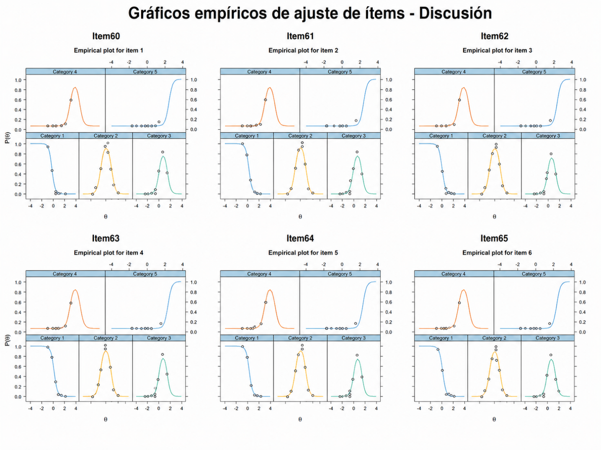
Ajuste por persona
El ajuste a la persona del modelo GRM para el constructo Discusión mostró algunos casos con patrones de respuesta atípicos, reflejados en valores elevados de outfit, infit y estadísticos Zh negativos. Los casos con mayor desajuste presentaron combinaciones poco esperadas de respuestas bajas en algunos ítems y respuestas altas en otros; por ejemplo, participantes que respondieron con puntuaciones mínimas en varios reactivos, pero seleccionaron categorías altas en otros ítems del mismo constructo. No obstante, este comportamiento no debe interpretarse automáticamente como error, falta de atención o invalidez de la respuesta. En el constructo Discusión, es posible que los estudiantes conozcan algunos componentes específicos, como la vinculación de los resultados con la literatura, la interpretación de hallazgos o el reconocimiento de implicaciones, pero no dominen otros elementos del proceso de discusión. Por tanto, el desajuste a la persona debe entenderse como una señal diagnóstica de heterogeneidad en los perfiles de conocimiento, más que como un criterio directo de exclusión de casos. En conjunto, estos resultados sugieren que algunos participantes presentan trayectorias diferenciadas dentro del constructo Discusión, posiblemente asociadas con aprendizajes parciales, dominio desigual de contenidos o experiencias formativas heterogéneas.
Curva de información del ítem (IIF)
La curva de información del ítem para el constructo Discusión muestra que los seis reactivos aportan información en una zona muy concentrada del continuo, aproximadamente entre θ = -1 y θ = 3.2, con mayor precisión en niveles bajos-medios, medios y medio-altos del rasgo latente. Los ítems con mayor aporte de información son Item62 (a1 = 4.670), Item61 (a1 = 4.630), Item63 (a1 = 4.602) e Item64 (a1 = 4.580), lo cual coincide con sus altos parámetros de discriminación. Estos reactivos presentan picos elevados y estrechos, por lo que son especialmente útiles para diferenciar participantes con niveles cercanos de habilidad en Discusión. El Item60 (a1 = 4.101) también aporta información alta, aunque ligeramente menor que los anteriores. Por su parte, Item65 (a1 = 3.639) muestra el menor aporte relativo, pero sigue contribuyendo de manera adecuada al conjunto. En general, la información de los ítems es baja en los extremos del continuo, especialmente por debajo de θ = -2 y por encima de θ = 4, lo que indica menor precisión para participantes con niveles muy bajos o muy altos. En conjunto, los resultados sugieren que los ítems de Discusión son altamente informativos, particularmente en el rango central y medio-alto del rasgo latente.
| Item | a1 | d1 | d2 | d3 | d4 |
|---|---|---|---|---|---|
| Item60 | 4.101 | 2.479 | -3.038 | -6.837 | -10.918 |
| Item61 | 4.63 | 3.36 | -2.59 | -7.395 | -12.112 |
| Item62 | 4.67 | 2.582 | -3.457 | -7.791 | -12.588 |
| Item63 | 4.602 | 2.147 | -3.619 | -7.904 | -12.429 |
| Item64 | 4.58 | 2.669 | -2.982 | -7.571 | -12.225 |
| Item65 | 3.639 | 2.219 | -2.438 | -5.829 | -9.287 |
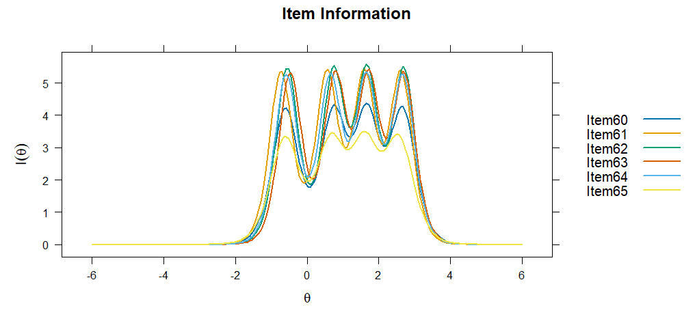
Curva de información del test (TIF) y Curva de error estándar (SEC)
La curva de información total del test (TIF) para el constructo Discusión muestra que el modelo ofrece mayor precisión de medición aproximadamente entre θ = -1 y θ = 3.2, con varios picos de información ubicados en niveles bajos-medios, medios y medio-altos del rasgo latente. En esta zona, la curva de información se mantiene elevada, lo que indica que el conjunto de ítems discrimina con alta precisión entre participantes con niveles cercanos de habilidad en Discusión. De manera complementaria, el error estándar de medición (SEC/SE) se mantiene bajo en el mismo intervalo, lo que confirma que las puntuaciones latentes son más estables y confiables dentro de ese rango. En cambio, la información disminuye de forma marcada en los extremos del continuo, especialmente por debajo de θ = -2.5 y por encima de θ = 4, donde el error estándar aumenta considerablemente. En conjunto, la TIF y la SEC indican que la escala mide con alta precisión los niveles centrales y medio-altos del constructo Discusión, pero con menor precisión para perfiles extremadamente bajos o extremadamente altos.
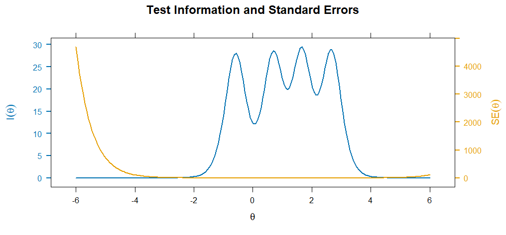
Estimación referencial de habilidades latentes
Una vez calibrado el modelo GRM del constructo Discusión, se estimaron de manera referencial las habilidades latentes de los participantes mediante el método EAP. Para fines descriptivos, las puntuaciones se clasificaron mediante un baremo teórico de la escala θ: muy bajo (θ < -2), básico (-2 ≤ θ < -1), intermedio bajo (-1 ≤ θ < -0.5), intermedio (-0.5 ≤ θ ≤ 0.5), intermedio alto (0.5 < θ ≤ 1), bueno (1 < θ ≤ 1.5) y avanzado (θ > 1.5). Esta clasificación debe interpretarse como una aproximación descriptiva del modelo calibrado, no como una clasificación diagnóstica definitiva. Las habilidades latentes estimadas se distribuyeron alrededor del centro de la escala θ, con una media cercana a cero (M = 0.001) y una dispersión próxima a una unidad estándar (DE = 0.961). El error estándar promedio fue moderado (M_SE = 0.262), lo que sugiere una precisión aceptable en la estimación de las puntuaciones latentes. En términos descriptivos, la mayor proporción de participantes se ubicó en el nivel intermedio (40.3%), seguida de los niveles básico (17.7%), intermedio alto (13.2%), intermedio bajo (12.6%), bueno (10.2%) y avanzado (6.0%). No se observaron participantes en el nivel muy bajo. En conjunto, los resultados sugieren que el modelo organiza principalmente a los participantes en niveles intermedios del constructo Discusión, con menor presencia de perfiles altos y ausencia de perfiles extremadamente bajos.
| n | Media θ | DE θ | Mínimo θ | Máximo θ | Media SE | Muy bajo | Básico | Intermedio bajo | Intermedio | Intermedio alto | Bueno | Avanzado |
|---|---|---|---|---|---|---|---|---|---|---|---|---|
| 722 | 0.001 | 0.961 | -1.53 | 3.24 | 0.262 | 00.0% | 12817.7% | 9112.6% | 29140.3% | 9513.2% | 7410.2% | 436.0% |
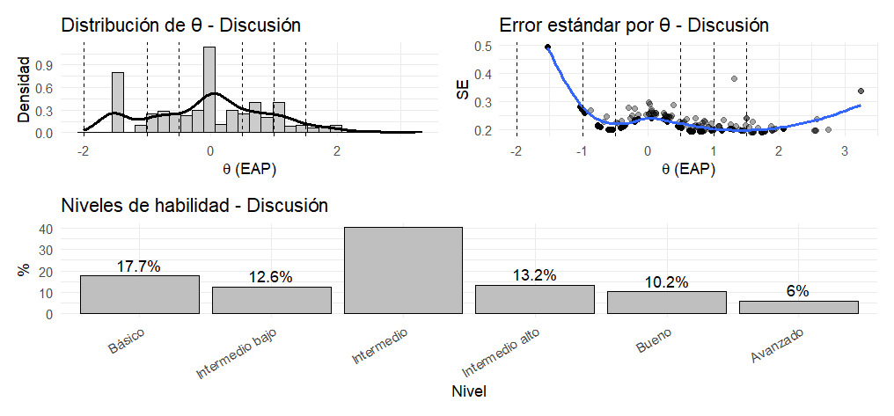
El histograma de las puntuaciones EAP del constructo Discusión permite observar la distribución empírica de las habilidades latentes estimadas y compararla con los criterios teóricos referenciales definidos para la escala θ. Visualmente, la mayor concentración de participantes se ubica alrededor del centro del continuo, especialmente entre valores cercanos a θ = -0.5 y θ = 0.5, lo que coincide con la mayor proporción clasificada en el nivel intermedio. También se observa presencia de participantes en niveles básico, intermedio bajo, intermedio alto y bueno, mientras que los casos en niveles altos son menos frecuentes y los perfiles muy bajos no aparecen en la distribución estimada. En este sentido, la gráfica confirma que los puntos de corte teóricos permiten organizar descriptivamente la distribución de los EAP, pero no deben interpretarse como grupos empíricos naturales. Más bien, funcionan como una guía referencial para comunicar los niveles de habilidad latente en Discusión, mientras que el histograma muestra de forma más directa cómo se distribuyen realmente las estimaciónes en la muestra.
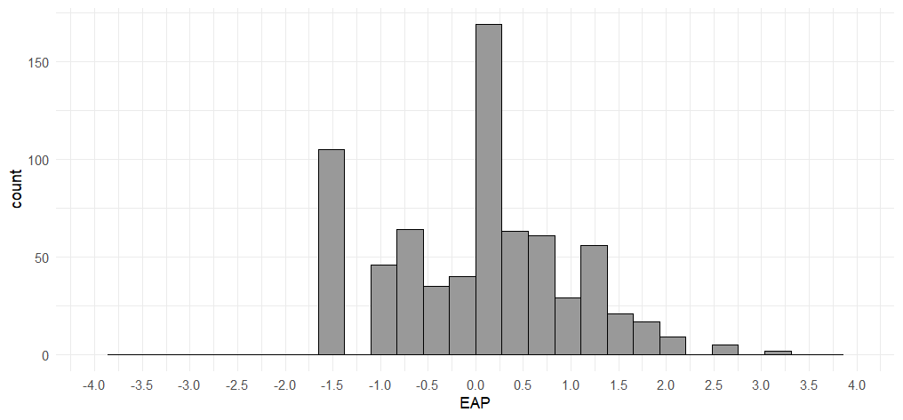
Distribución posterior del rasgo latente
La distribución posterior del rasgo latente para el constructo Discusión muestra una forma aproximadamente unimodal, con la mayor concentración de participantes alrededor de θ = 0, es decir, cerca del nivel medio del continuo. La densidad disminuye progresivamente hacia los extremos, lo que indica una menor presencia de estudiantes con niveles muy bajos o muy altos del rasgo latente. La distribución es coherente con las puntuaciones EAP previamente estimadas, donde la mayor proporción de participantes se ubicó en el nivel intermedio. También se observa una ligera extensión hacia valores positivos, lo que sugiere la presencia de algunos participantes con niveles medio-altos o altos en Discusión, aunque sin conformar un grupo separado. En conjunto, la distribución posterior respalda que el modelo GRM organiza principalmente a los estudiantes alrededor de niveles centrales del constructo Discusión, con menor representación de perfiles extremos.
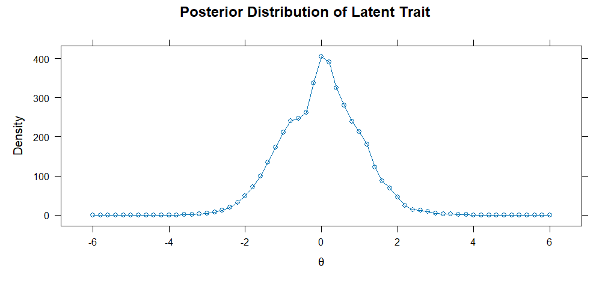
Evaluación del ajuste persona-ítem mediante Wright Map
El WrightMap del constructo Discusión permite observar la correspondencia entre la distribución de los participantes y la localización de los umbrales de respuesta de los ítems en la misma escala logit. En el panel izquierdo, la mayor concentración de participantes se ubica alrededor de niveles bajos-medios y medios del rasgo latente, aproximadamente entre θ = -1.5 y θ = 1.5, con menor presencia en los extremos. En el panel derecho, los umbrales de los ítems se distribuyen de forma ordenada: los b1 se localizan en niveles bajos, los b2 cerca de niveles medios, los b3 en niveles medio-altos y los b4 en niveles altos del continuo. Esto confirma el funcionamiento progresivo de las categorías de respuesta. Sin embargo, los umbrales superiores, especialmente b4, se ubican por encima de la zona donde se concentra la mayoría de los participantes, lo que indica que las categorías más altas representan niveles exigentes del constructo Discusión y son alcanzadas por menos estudiantes. En conjunto, el mapa muestra una adecuada cobertura del constructo en niveles bajos, medios y medio-altos, aunque con menor representación empírica de participantes en los niveles más altos.
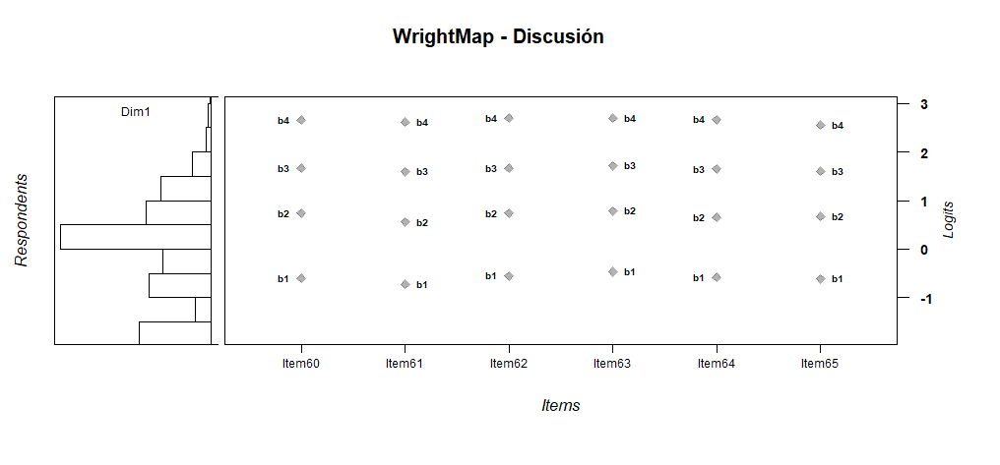
Fiabilidad
La fiabilidad marginal del modelo GRM para el constructo Discusión fue elevada (rxx = .902), lo que indica una adecuada precisión global en la estimación de las habilidades latentes. La curva de fiabilidad muestra que la precisión no es uniforme a lo largo de todo el continuo θ: los valores de fiabilidad se mantienen altos aproximadamente entre θ = -1.5 y θ = 3.5, zona donde el conjunto de ítems aporta mayor información y permite estimaciónes más estables. En cambio, la fiabilidad disminuye de manera marcada en los extremos del continuo, especialmente por debajo de θ = -2.5 y por encima de θ = 4, lo cual es esperable debido a la menor información disponible y a la menor presencia de participantes en esos rangos. En conjunto, estos resultados indican que el constructo Discusión presenta una fiabilidad adecuada para interpretar puntuaciones latentes en niveles bajos-medios, medios y medio-altos, aunque con menor precisión para perfiles extremadamente bajos o altos.
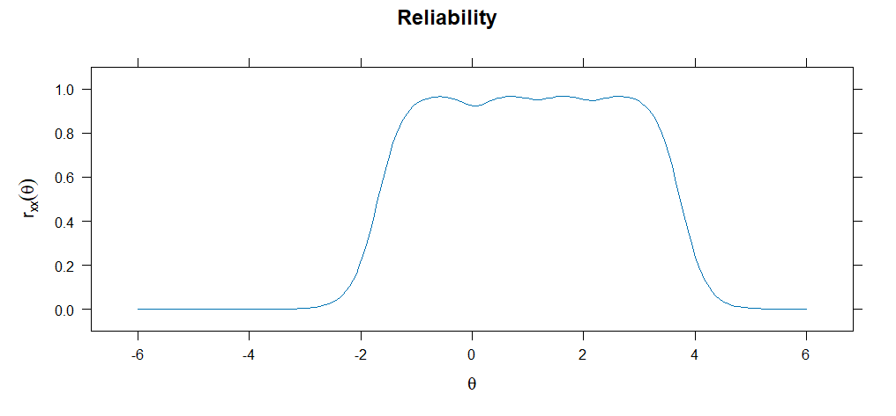